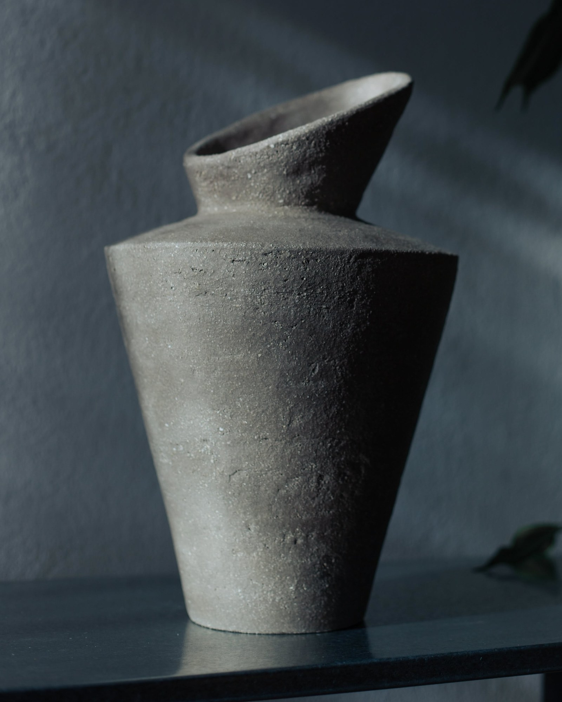
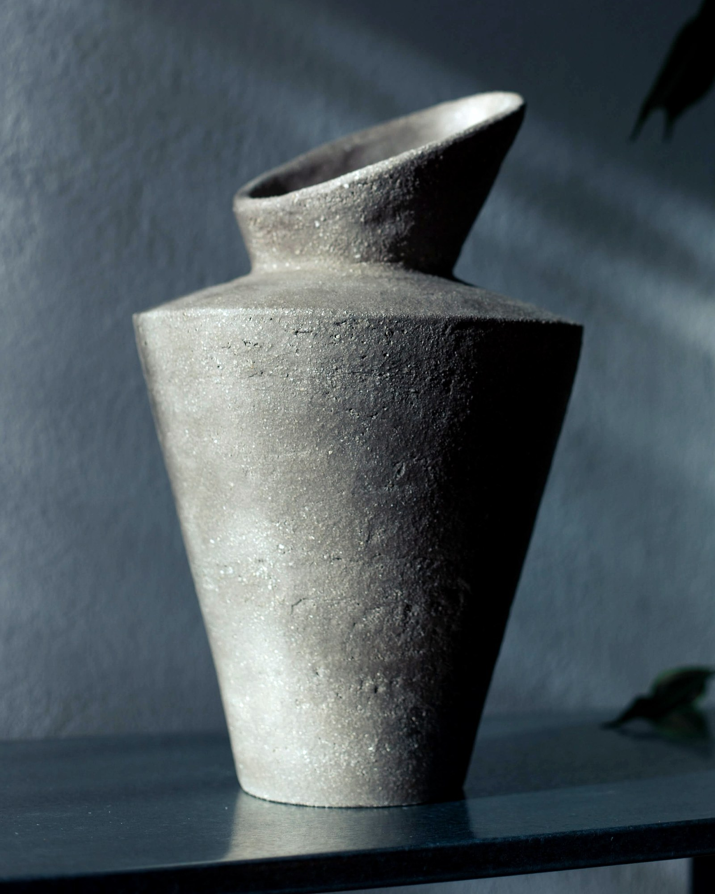
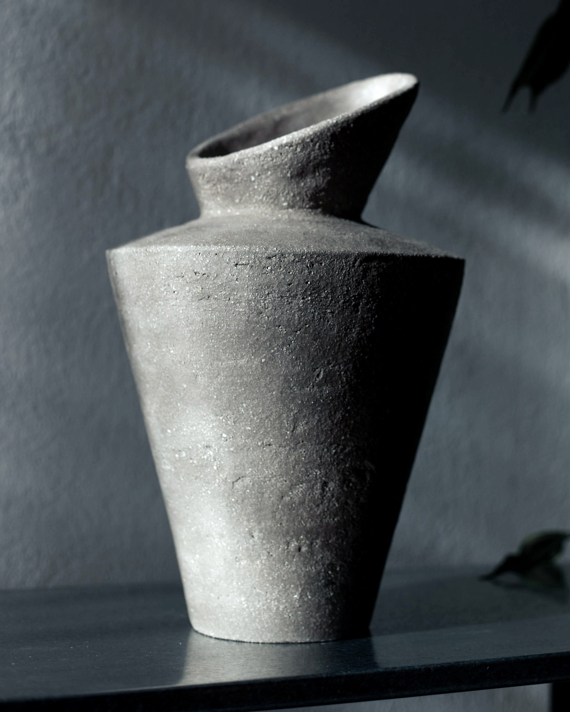
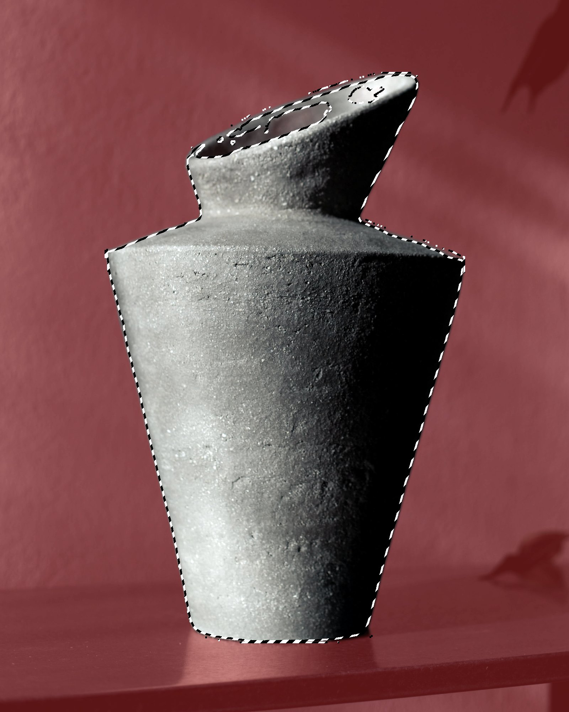

قبل أي تعديل، قِسنا الصورة الأساسية (صورة 2): صيغتها، أبعادها، دقتها، وإضاءتها.
3134 PX
4096 PX
0px
العرض — Width
0px
الارتفاع — Height
JPEG
الصيغة — Format
0dpi
الدقة — Resolution
0KB
حجم الملف
0/255
متوسط الإضاءة
مناسبة للاستخدام الرقمي؟ جداً. 3134 بكسل عرض أكتر بكتير من اللوحة (1080 × 1350)، فعندنا مساحة نقص من غير ما نكبّر. الـ 72 dpi رقم مكتوب في الملف بس، المهم عدد البكسلات — ولو طبعناها بدقة 300 dpi هتطلع حوالي 26 × 35 سم.
قياس من الصورة نفسها: متوسط اللون RGB(51, 59, 63) — الأزرق أعلى من الأحمر، يعني الصورة غامقة ومايلة للأزرق، والطين الرمادي طالع لونه بارد.
صيغة التصدير: المزهرية المفصولة PNG عشان الشفافية، واللوحة النهائية PNG عشان النصوص الرفيعة تفضل حادة.
03
المرحلة الثالثة
تحرير الصورة، خطوة بخطوة
Basic Image Editing · Photopea
انزل ببطء — الصورة بتتغير مع كل خطوة. تحت كل خطوة: الأداة، القيم بالأرقام، عملنا إيه وليه، ومكان لسكرين شوت البرنامج.




خطوة 1 / 73134 × 4096
Step 01
القص — Cropping
Crop Tool (C) · Ratio 4:5
الأبعاد
3134×4096→2461×3076
اللي اتشال
41%
ثبّتنا نسبة القص على 4:5 عشان تطابق نسبة اللوحة. شلنا ورق الشجر من اليمين، والجزء الغامق الفاضي من فوق، ورجلين الترابيزة. المزهرية بقت مالية الكادر مع مساحة تتنفس حواليها.
+ضيف سكرين شوت Photopea وإطار القص ظاهر
Step 02
تغيير الأبعاد — Resize
Image › Image Size · Constrain Proportions
الأبعاد
2461×3076→1600×2000
النسبة
65%
صغّرنا لـ 1600 × 2000 مع قفل النسبة عشان مايحصلش مط. الحجم ده أكبر من اللي محتاجينه في اللوحة، فبيدّينا هامش أمان من غير ملف تقيل.
+ضيف سكرين شوت نافذة Image Size
Step 03
السطوع والتباين — Brightness / Contrast
Image › Adjustments › Brightness/Contrast
السطوع · التباين
+22% · +15%
متوسط الإضاءة
68.5→82.7
المزهرية كانت غامقة وتفاصيل الطين ضايعة. فتّحنا وزوّدنا التباين عشان حبيبات الجروج وملمس السطح يبانوا — من غير ما نبوّظ الجو الغامق.
+ضيف سكرين شوت النافذة والقيم ظاهرة
Step 04
التشبع اللوني — Saturation
Image › Adjustments › Hue/Saturation
التشبع
−45%
متوسط التشبع
25.9%→16.4%
قلّلنا التشبع عشان نشيل الأزرق اللي راكب على الطين. متوسط اللون اتحرك من RGB(75, 85, 91) لـ RGB(78, 84, 87) — يعني القنوات التلاتة قربوا من بعض والطين رجع رمادي محايد زي لونه الحقيقي.
+ضيف سكرين شوت Hue/Saturation
Step 05
تحديد المنتج — Selection
Select › Magic Cut
مساحة التحديد
33.4%
الحواف
ناعمة — من غير Feather زيادة
حددنا المزهرية بأداة التحديد الذكي. الأحمر الشفاف هو اللي برّه التحديد، والخط المتقطع هو حدود المزهرية. أصعب جزء كان الفتحة من جوه لأنها فاتحة وقريبة من لون الحيطة، فراجعناها يدوي.
+ضيف سكرين شوت والتحديد ظاهر
Step 06
إزالة الخلفية — Background Removal
Layer › Layer Mask › Reveal Selection
الناتج
1010 × 1601
الصيغة
PNG شفاف
استخدمنا Layer Mask بدل المسح، عشان لو احتجنا نصلّح الحواف نرجع من غير ما نخسر الصورة. صدّرنا المزهرية PNG — المربعات في الخلفية معناها شفاف.
+ضيف سكرين شوت المزهرية على خلفية شفافة
Step 07
خلفية جديدة — Background Replacement
Gradient · Place Embedded · Blend Mode: Screen
الخلفية
#1B2128 → #0C0F13
عنصر من صورة 3
Screen · 62%
تدرّج سليت غامق، وإضاءة ناعمة ورا المزهرية عشان جانبها الغامق مايختفيش في الخلفية. خدنا خطوط الضوء المايلة من صورة 3، حوّلناها رمادي، وحطيناها بـ Screen في الركن اليمين اللي فوق. وضفنا ظل ناعم تحت القاعدة.
+ضيف سكرين شوت ولوحة Layers ظاهرة
قبل وبعد — اسحب الخط
بعدقبل
الصورة الأصلية (herona-2.jpg) محفوظة من غير تعديل — كل التعديلات اتعملت على نسخة.
04
المرحلة الرابعة
التكوين البصري
Digital Composition
رسمنا مسودتين مختلفتين قبل التنفيذ. اضغط على أي مسودة تشوف رأينا فيها.
A — متماثل
B — غير متماثلالمعتمد
ليه اخترنا B: كلمة HERONA الكبيرة ورا المزهرية والرقبة المايلة طالعة قدامها — ده بيعمل عمق، وكأن المزهرية خارجة من اللوحة. المزهرية شمال والنص في عمود رفيع يمين، والكلمة اللي بعرض اللوحة كلها بتربط الاتنين فالتكوين متزن رغم إنه مش متماثل.
التسلسل الهرمي — العين بتقرا بالترتيب ده
1234
1 الاسم · 2 المزهرية · 3 الاسم بالعربي والوصف · 4 الخصائص
01التسلسل الهرميHierarchy
الاسم أكبر حاجة في اللوحة (217px)، وبعده المزهرية، وبعدين الاسم العربي (50px)، وآخر حاجة الخصائص (18.5px).
02الاتزانBalance
كتلة المزهرية التقيلة شمال قصادها عمود نص رفيع يمين، والكلمة الكبيرة فوق بتوزن الاتنين.
03التباينContrast
نص فاتح على سليت غامق (13.5:1)، ورمادي الطين قدام خلفية أغمق منه، والنحاسي للأرقام بس.
04المساحة الفارغةNegative Space
تحت المزهرية مساحة فاضية كبيرة، فالعين ترتاح والقطعة تاخد حقها.
05الوحدةUnity
كل الألوان من نفس الصور، ونفس الخط الإنجليزي في الاسم والأرقام.
05
المرحلة الخامسة
الألوان، الخطوط، والشبكة
Typography, Color & Grid Systems
تلات ألوان خدناها بالـ Eyedropper من الصور نفسها، ولون إبراز دافي اخترناه يكمّل الأزرق البارد. اضغط على أي لون تنسخ الكود.
النص الأساسي13.5:1
النص الثانوي8.1:1
الأرقام النحاسي7.7:1
نسب التباين محسوبة — كلها أعلى من الحد المطلوب للقراءة (4.5:1).
IBM Plex Sans Arabic Light 300 · 50 px — الاسم العربي
قطعة خزفية من طين عالي الجروج، برقبة مائلة تكسر التماثل.
IBM Plex Sans Arabic Light 300 · 19 px — الوصف
خطين بس: Cormorant Garamond — خط سيريف كلاسيكي برقة الخزف — للاسم والأرقام، وIBM Plex Sans Arabic بوزن خفيف لكل النص العربي. الفخامة جاية من الأوزان الخفيفة والمسافات الواسعة، مش من خط مزخرف.
الاسم ورا المزهرية بيعمل عمق، والنص في عمود رفيع مايزحمش
التسلسل
الاسم ← المزهرية ← الوصف ← الخصائص
الاسم يتقري الأول، وبعدين العين تنزل للقطعة
الألوان
3 من الصور + نحاسي مكمّل
اللوحة تشبه المنتج، والنحاسي بيدفّي الأزرق البارد
الخطوط
Cormorant + IBM Plex Arabic
سيريف رقيق للاسم، وعربي خفيف وواضح للنص
العنصر الإضافي
خطوط الضوء من صورة 3
بتربط اللوحة بالجو الأصلي للصور
الصيغة
PNG
النصوص الرفيعة تفضل حادة، والمزهرية المفصولة محتاجة شفافية
المشاكل اللي واجهتنا — وحلّيناها إزاي
المشكلة ← الحل
المشكلة 1 — الأهم
بعد ما فصلنا المزهرية وحطيناها على خلفية غامقة، جانبها الضلمة اختفى في الخلفية ومبقاش شكلها واضح.
الحل
عملنا إضاءة ناعمة ورا المزهرية (Radial Gradient) بلون سليت أفتح، فحدود القطعة رجعت تبان من غير ما الجو يفتح.
المشكلة 2
الصورة غامقة (متوسط الإضاءة 57 من 255) ومايلة للأزرق، فالطين الرمادي طالع بارد.
الحل
سطوع +22% وتباين +15%، وبعدين تشبع −45%. متوسط التشبع نزل من 25.9% لـ 16.4%.
المشكلة 3
كلمة HERONA في الأول كانت بحجم 262px وطالعة برّه حافة اللوحة، والحرف الأخير مقطوع.
الحل
قِسنا عرض الكلمة وصغّرناها لـ 217px، فبقت بعرض الأعمدة الستة بالظبط من هامش لهامش.
أدوات مساعدة استُخدمت
Photopea (تحرير الصور) · Pinterest (مصدر الصور) · Google Fonts (Cormorant Garamond و IBM Plex Sans Arabic) · [اكتبوا أي أداة تانية استخدمتوها — مثلاً مساعد ذكاء اصطناعي وفي إيه بالظبط]